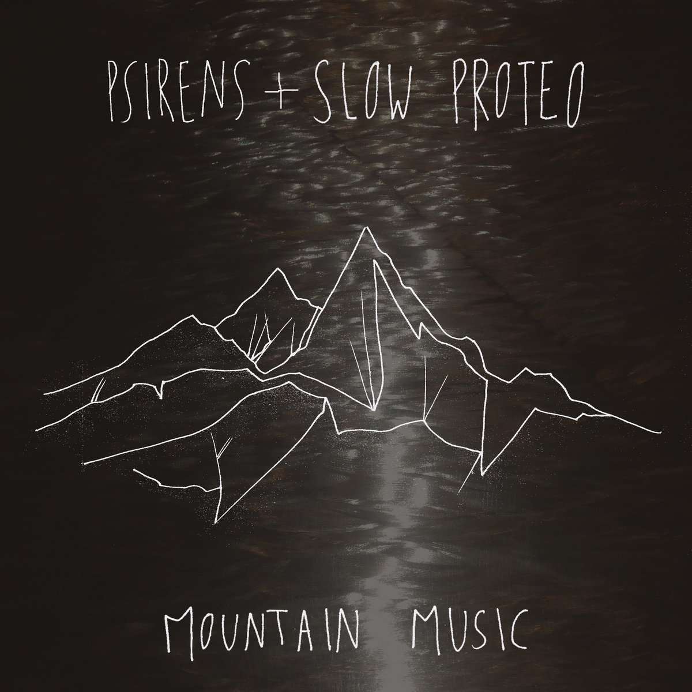

<!DOCTYPE html>
<html lang="en-US">

<head>
	<title>Avery</title>
	<meta name="viewport" content="width=device-width, initial-scale=1.0">
	<meta name="description" content="Avery's Portfolio">
	<link rel="shortcut icon" href="/AveryBickLogo.jpg" id="favicon">
	<link href="./css/style.css" rel="stylesheet" type="text/css"/>
	<link rel="stylesheet" href="https://fonts.googleapis.com/css?family=Didact+Gothic">
    <meta name="og:image" itemprop="image primaryImageOfPage" content="/AveryBickLogo.jpg">

	<style type="text/css">
	a:link {color:#50afe5;}    /* normal link */
	a:visited {color:#166592;} /* visited link */
	a:hover {color:#004E99;}   /* mouse over link */
	a:active {color:#fe0000}   /* selected link */
	</style>

</head>


</html>

<body>
	<div class="large-column" id="bio">
	<h1>Audiovisual</h1>
	<h3 id="DayOfNoise"><i>KZSU Day of Noise 2019</i></h3>
	<h5>Slow Proteo with Revel</h5>
	<br>
	<div class="iframe-container">
			<div class="iframe-container-4x3">

				<iframe src="https://player.vimeo.com/video/329001035?title=0&byline=0&portrait=0" allowfullscreen></iframe>
			</div>
	</div>
	<br>
	<p>A 30 minute audiovisual performance with Revel on guitar and vocals for the 2019 KZSU Day of Noise where we explore purpose, belonging, and disillusionment. 
	</p>

	<br>
	<br>
	<p>Produced in Ableton Live and Max MSP 
	<hr>

	<h3 id="rU10"><i>rU10 (with Q&amp;A)</i></h3>
	<h5>Ian Avery Bick, Kunwoo Kim, Matt Wright</h5>
	<br>
	<div class="iframe-container">
		<div class="iframe-container-4x3">
			<iframe src="https://player.vimeo.com/video/277935056?title=0&byline=0&portrait=0" allowfullscreen></iframe>
		</div>
	</div>

	<br>
	<p><i>Program Notes:</i> The individual and the collective exist in a dynamic equilibrium - adversarial yet interdependent. This piece investigates how historical social cycles of revolution and realization are warped by new factors: the internet, AI, and our own evolution.</p>

	<br>
	<br>

	<p>
	'I know your nerves are copper with rubber insulation; 
	I know your voice is programmed by someone, 
	but I don’t care. We’re all programmed—
	naturally or artificially' - Don Clermont, Untitled
	</p>

	<br>
	<br>


		<p>Performed with Stanford Laptop Orchestra in Bing Concert Hall, June 2018. Vocal samples provided by Paris Mancini. </p>

	<br>	
	<br>
	<p>Produced in Max MSP and Unity</p>

	<hr>

	<h3 id="forestmother"><i>Forest Mother Meets the Blob</i></h3>
	<h5>Music &amp; Video: Ian Avery Bick, Michael Betts, Niko Kush</h5>
	<h5>Dancers: Katie Shubat, Celia Rath, McKenna Leighton, Simone Hadley, Cas Parong</h5>

	<br>
	<div class="iframe-container">
		<div class="iframe-container-4x3">

			<iframe src="https://player.vimeo.com/video/276365279?title=0&byline=0&portrait=0" allowfullscreen></iframe>
		</div>
	</div>
<br>
<p> This piece explores rituals in the modern world. Basic computer vision is applied to detect the continuous forms - 'blobs' - of the dancers. The computer loosely follows them throughout their ritual - they are a discrete system of order and purpose amongst noise. This piece was exhibited at the Stanford GRID - a 30' x 30' laser grid with a waterfall for video projection. The project was set up in commemoration of the 200th anniversary of Mary Shelley's Frankenstein. </p>

<br>
<br>
<p>Produced in Max MSP and Adobe Premiere</p>
<hr>

<h3 id="sapiostasis-i"><i>Sapiostasis I</i></h3>
<h5>Ian Avery Bick</h5>
<br>
<div class="iframe-container">
	<div class="iframe-container-4x3">
		<iframe src="https://player.vimeo.com/video/263998070?title=0&byline=0&portrait=0" allowfullscreen></iframe>
	</div>
</div>
<br>
<p><i>Program Notes:</i> There is a natural feedback to the Universe that acts through defined rules. We have the capacity to understand these phenomenon, but not to evade them.</p> 
<br>
<br>
<p>Performed with Stanford Laptop Orchestra in Bing Concert Hall, June 2017.</p>

<br>
<br>
<p>Produced in Max MSP</p>

<hr>

<h3 id="sapiostasis-ii"><i>Sapiostasis II</i></h3>
<h5>Ian Avery Bick</h5>
<br>
<div class="iframe-container">
	<div class="iframe-container-4x3">
		<iframe src="https://player.vimeo.com/video/263998308?title=0&byline=0&portrait=0" allowfullscreen></iframe>
	</div>
</div>
<br>
<p>A continuation of Sapiostasis focused on ocean pollution - created for the Stanford Ocean Society 2017 Ocean Art Exhibition.</p>

<br>
<br>
<p>Produced in Max MSP</p>

<hr>

<h3 id="soundcloud">Mountain Music</h3>
<h5>Psirens & Slow Proteo</h5>

	

<br>
<br>
<p>Five song split EP with Psirens. Released with Santa Fe label Matron Records. Written in rural Washington state after a DIY tour through the Southwest, Mexico, and the West Coast. <a href="https://mountainmusic.bandcamp.com/releases">Listen here</a></p>

<div class="section bottom-menu"><hr/>
	<p>
		<a href="./index.html">home</a>
		<a href="./about.html">about</a>
		<a href="./environmental.html">environmental</a>
		<a href="./audiovisual.html">audiovisual</a>
	</p><
</div>

</body>